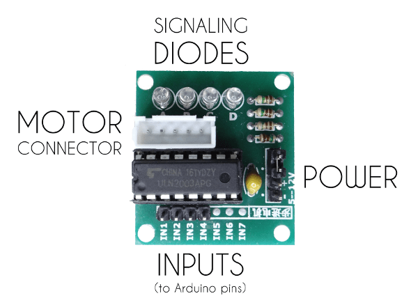
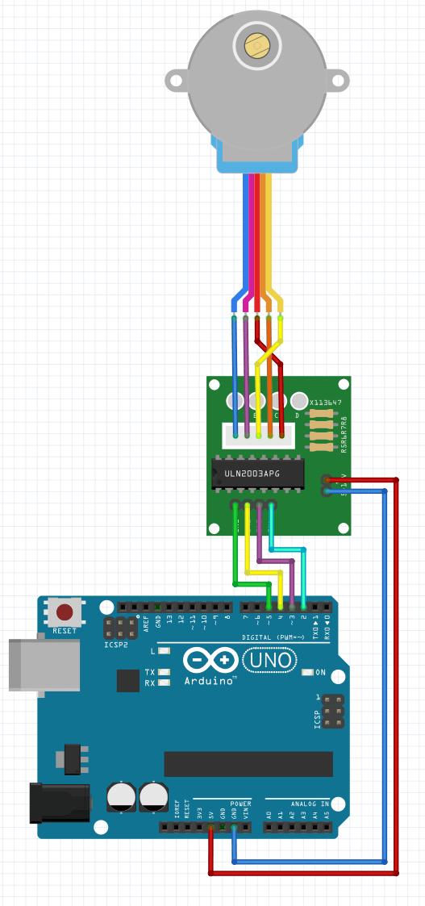

Servos are cool but you can only move them from 0 to 180 degrees, what if you want to have precise continuous rotation? Stepper motor is the answer. A stepper motor is a very precise motor that you can instruct to rotate one step at a time. They are used in CNC machines, 3D printers and in robotics. The big ones can be really expensive. In this tutorial, we are going to use a super cheap stepper motor with a stepper driver. You can find them online for as cheap as $2 (motor + driver). The 28byj-48 is the one stepper we will work with and you can find lots of projects that use this motor just by googling it’s name. Thanks to its driver it’s super easy to connect it to the Arduino Uno board.
What we need:
- 1 x Arduino Uno board
- 1 x 28byj-48 stepper motor with driver
- Jumper wires
You will need 6 cables with female-male connectors, 4 of them from the Arduino digital pins to the stepper driver and 2 of them from the Arduino power pins to the stepper driver power pins. You can simply connect the motor to the driver with its connectors. Here is an image that shows what is found on the stepper driver.
Here is how you should connect the whole.
Last but not least the Arduino program. It uses a the SWITCH CASE command to shorten the its length.
Arduino stepper motor code
//we need this value to know which coil should be turned on in stepper motor
int step_count;
void setup() {
//seting up pins as outputs for motor driver
pinMode(2, OUTPUT);
pinMode(3, OUTPUT);
pinMode(4, OUTPUT);
pinMode(5, OUTPUT);
}
void loop() {
//using switch and based on step_count we can perform each motor step
//as you can see we are shifting high state every step
switch(step_count){
case 0:
digitalWrite(2, HIGH);
digitalWrite(3, LOW);
digitalWrite(4, LOW);
digitalWrite(5, LOW);
break;
case 1:
digitalWrite(2, LOW);
digitalWrite(3, HIGH);
digitalWrite(4, LOW);
digitalWrite(5, LOW);
break;
case 2:
digitalWrite(2, LOW);
digitalWrite(3, LOW);
digitalWrite(4, HIGH);
digitalWrite(5, LOW);
break;
case 3:
digitalWrite(2, LOW);
digitalWrite(3, LOW);
digitalWrite(4, LOW);
digitalWrite(5, HIGH);
break;
}
//incrementing step_count value
step_count++;
//if it is bigger than should set it to 0
if(step_count > 3){
step_count = 0;
}
//change the delay to change the speed for this motor 0.002 second is the smallest possible
delay(3);
}
I figured I should add a piece of tape on the rotating head of the motor to be able to easily see what is happening.